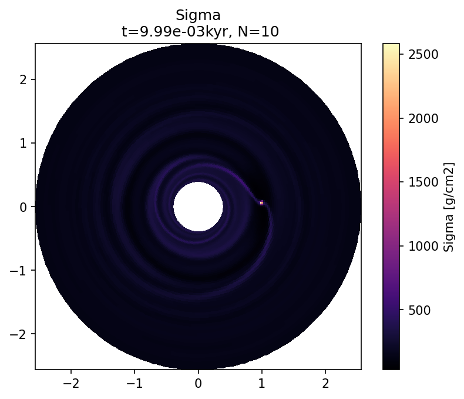
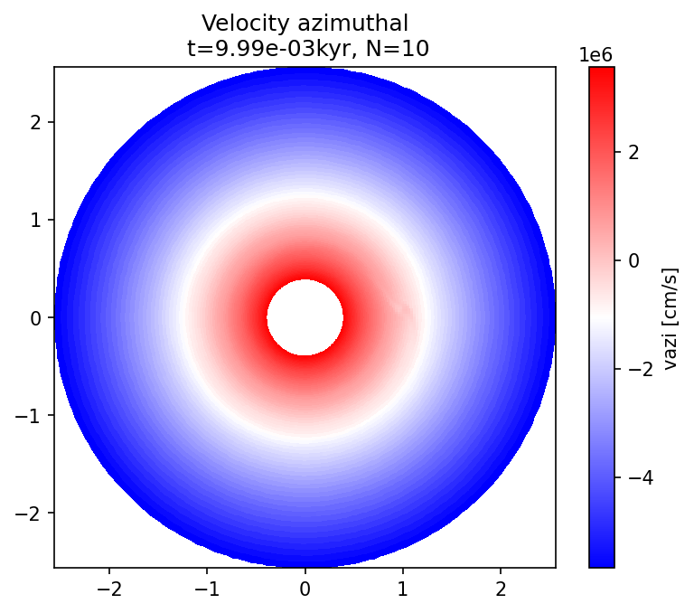

Disk Plots¶
This notebook shows how to produce top-down view plots of the disk.
We will reuse the data from the 100_quickstart example.
Let’s make sure it existst.
example_name = "100_quickstart"
example_dir = f"example_dirs/{example_name}"
import os
if not os.path.basename(os.getcwd()) == example_name:
if os.path.exists(example_dir):
os.chdir(example_dir)
if not os.path.exists("output/out/snapshots/list.txt"):
raise FileNotFoundError(f"No snapshots found. Please run the simulation inside the 100_Quickstart.ipynb notebook first!")
else:
raise FileNotFoundError(f"Please go through the 100_Quickstart.ipynb notebook first!")
repo_root = os.path.abspath(os.path.join(os.getcwd(), "../../../"))
print(f"Current working directory: {os.getcwd()}")
print(f"Repository root directory: {repo_root}")
Current working directory: /home/rometsch/repo/fargocpt/examples/example_dirs/100_quickstart
Repository root directory: /home/rometsch/repo/fargocpt
Plotting fields¶
The data is present in polar (\(r-\varphi\)) coordinates.
To plot the disk as a circular object, we can calculate the coordinates in cartesian coordinates and then use pcolormesh from matplotlib.
Below is a function to plot a field from the simulation output in such a way.
import numpy as np
import matplotlib.colors as mplcolors
import matplotlib.pyplot as plt
def plot_field(loader, name, N, ax=None, dataunit=None, vmin=None, vmax=None, cmap="viridis", title=None):
R, PHI, vals = loader.gas.vars2D.get(name, N, grid_for_plot=True)
if dataunit is None:
dataunit = vals.unit
C = vals.to_value(dataunit)
X = R*np.cos(PHI)
Y = R*np.sin(PHI)
if ax is None:
fig, ax = plt.subplots(dpi=150)
else:
fig = ax.get_figure()
norm = mplcolors.Normalize(vmin=vmin, vmax=vmax)
# Hacky way to support arrays that are defined on the radial interfaces
if C.shape[0] == X.shape[0]:
C = C[:-1,:]
pcm = ax.pcolormesh(X,Y,C, norm=norm, cmap=cmap)
ax.set_aspect("equal")
t = loader.snapshot_time[N].to_value("kyr")
if title is None:
title = ""
else:
title += "\n"
title += f" t={t:.2e}kyr, N={N}"
ax.set_title(title)
cbar = fig.colorbar(pcm, ax=ax)
cbar.set_label(f"{name} [{dataunit}]")
return fig
Now, let’s plot some fields.
from fargocpt import Loader
l = Loader("output/out/")
Nlast = l.snapshots[-1]
plot_field(l, "Sigma", Nlast, dataunit="g/cm2", cmap="magma", title="Sigma");
plot_field(l, "vrad", Nlast, dataunit="cm/s", cmap="bwr", title="Velocity radial");
plot_field(l, "vazi", Nlast, dataunit="cm/s", cmap="bwr", title="Velocity azimuthal");



Using the overview widget¶
We can also use the overview widget.
Just remove the rphi in the variable descriptions as done below.
Run the next cell again to refresh the snapshot list.
# %matplotlib widget
from fargocpt import Overview
overview = Overview("output/out/",
vars=["2:Sigma:rel,rphi",
"2:vazi:rel,rphi",
"2:vrad:diff,rphi",
"1:Sigma:minmax",
"1:vazi:rel,minmax",
"1:vrad:diff,minmax"],
start=8)
overview.create();